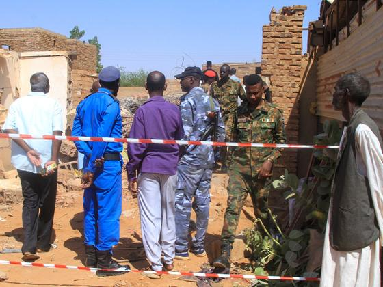
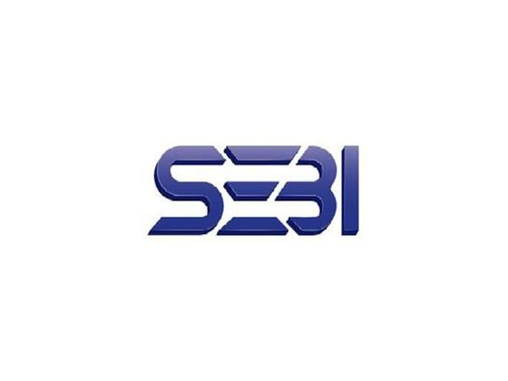
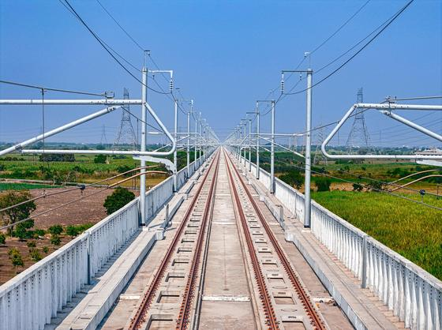
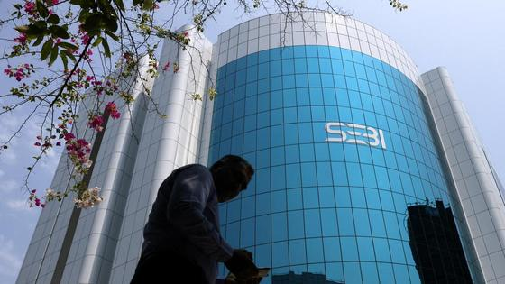
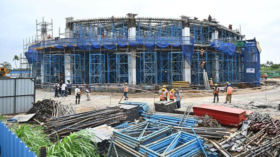
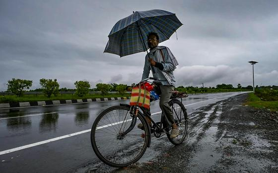

Executive Synthesis: Jensen Huang's shock return as Nvidia CEO sparks a historic Wall Street relief rally inside a technical downtrend, while memory bottlenecks, agent harnesses, Hormuz mines, and Amaravati's blueprint test conviction.
World and India
From the COP31 climate talks collapse in Antalya, naval mine strikes in the Strait of Hormuz, and IEEPA tariff refund appeals to RBI's digital fraud Stop Switch, SEBI's IPO grey-market ban, Amaravati's ₹4.65 lakh crore masterplan, and US-India H-1B aging-out legislation.
World
| The Guardian: | yesterday · 5m |
COP31 climate talks collapse in Antalya without final deal over fossil fuels and finance
—
Nearly 200 countries meeting in Antalya, Turkey, failed to adopt a final COP31 cover decision—the Antalya pact—after oil-producing states blocked any reference to fossil fuels and a coalition of roughly 130 nations including the EU, UK, and vulnerable island states refused to sign a text omitting it. Although the COP28 commitment to transition away from fossil fuels remains intact, disputes over climate finance left adaptation funding mechanisms unresolved ahead of COP32 in Ethiopia.
Takeaway: Connects directly to your geopolitics, global energy transition, and international trade policy tracking.
| CBS News: | today · 4m |
 Three tankers hit naval mines in Strait of Hormuz as Iran rejects U.S. blockade
—
The Iranian navy said three oil tankers struck naval mines in the Strait of Hormuz on November 23, sparking explosions and fires following attacks on three other tankers on November 21, with no immediate casualties reported. Iranian Foreign Minister Abbas Araghchi called a land blockade impossible and vowed to counter the U.S. naval blockade on Iranian ports, underscoring how maritime chokepoint disruption remains Tehran's primary lever to raise global energy risk.
Three tankers hit naval mines in Strait of Hormuz as Iran rejects U.S. blockade
—
The Iranian navy said three oil tankers struck naval mines in the Strait of Hormuz on November 23, sparking explosions and fires following attacks on three other tankers on November 21, with no immediate casualties reported. Iranian Foreign Minister Abbas Araghchi called a land blockade impossible and vowed to counter the U.S. naval blockade on Iranian ports, underscoring how maritime chokepoint disruption remains Tehran's primary lever to raise global energy risk.
Takeaway: Directly tracks your Middle East, Iran, Strait of Hormuz, and global energy supply-risk watchlist.
| Ukrainska Pravda: | today · 3m |
Zelenskyy says Kyiv is ready for four-party peace talks with U.S., Europe, and Russia
—
Addressing the NATO Parliamentary Assembly in Berlin by video link on November 23, Ukrainian President Volodymyr Zelenskyy said partners aim to convene a four-party summit—Ukraine, Europe, the U.S., and Russia—before Christmas and that Kyiv is prepared to meet as early as tomorrow. He noted Washington secured agreement on European participation, stressing that Western allies must finalize a unified agenda and binding Euro-Atlantic security guarantees before sitting down with Moscow.
Takeaway: Follows your Russia–Ukraine war diplomacy and European security architecture thread.
| National Law Review: | today · 5m |
Federal Circuit appeal tests scope of IEEPA tariff refunds after Supreme Court ruling
—
Following the U.S. Supreme Court's February 2026 ruling in Learning Resources, Inc. v. Trump invalidating tariffs imposed under IEEPA, a pending Federal Circuit appeal tests whether the Court of International Trade can enforce a nationwide refund order or must restrict relief to named plaintiffs under Trump v. CASA. Customs' CAPE portal had validated roughly 44 million entries by late October, but entries more than 80 days past liquidation generally still require individual court orders.
Takeaway: Important U.S. court and trade-policy update affecting global supply chains and U.S. import tariff mechanics.
| Business Insider Africa: | today · 4m |
U.S.–Iran conflict delivers $21.6 billion windfall to nine African fossil-fuel exporters
—
As U.S. military spending on the Iran campaign reached an estimated $48.3 billion through mid-November, analysis by the Centre for Research on Energy and Clean Air shows nine African fossil-fuel exporters captured $21.6 billion in extra revenue in the six months to August 2026 from tighter global supply. Nigeria led with a $7.5 billion net gain—boosted by the Dangote refinery scaling petroleum product exports to 350,000 barrels per day—followed by Angola, Libya, and Algeria.
Takeaway: Quantifies second-order global energy-trade shifts and fiscal consequences of the Middle East conflict.
| The Guardian: | 3 days ago · 4m |
White House threatens penalties on U.S. tech companies building data centers abroad
—
President Donald Trump stated on November 20 that the administration plans to impose steep penalties on U.S. technology companies constructing data centers overseas, framing the move as an effort to keep AI compute infrastructure inside the United States rather than ceding capacity to China. He offered no statutory mechanism or timeline and acknowledged he had not yet briefed officials on implementation, leaving cloud and semiconductor planners watching for formal policy follow-through.
Takeaway: Relevant to your AI compute geography, U.S.–China tech policy, and cloud infrastructure tracking.
| Al Jazeera: | yesterday · 3m |

Drone strikes near Khartoum kill four and damage UN building as Sudan war escalates — Early on November 22, drone attacks attributed to Sudan's paramilitary Rapid Support Forces struck residential areas around Khartoum as Sudanese air defenses intercepted drones reportedly targeting government buildings and the capital's airport. Three civilians were killed and nine wounded in northern Omdurman, a child died in Jebel Aulia south of the city, and a United Nations facility was damaged, highlighting mounting risks to civilians and humanitarian operations from unmanned warfare.
Takeaway: Broad geopolitical update tracking conflict escalation and humanitarian security in Northeast Africa.
India national
| The Free Press Journal: | today · 4m |
 RBI proposes instant 'Stop Switch' and Trusted Person check to curb digital banking fraud
—
Under the draft RBI (Commercial Banks – Responsible Business Conduct) Fifth Amendment Directions, 2026, banks would be required to offer a 'Stop Switch' enabling customers to immediately freeze all outward future debits except existing standing instructions, loan installments, and liens. The framework also introduces a 'Trusted Person Mechanism' for extra authentication above user-set transfer thresholds and expands 'bank negligence' to cover system malfunctions, security breaches, and staff or third-party collusion.
RBI proposes instant 'Stop Switch' and Trusted Person check to curb digital banking fraud
—
Under the draft RBI (Commercial Banks – Responsible Business Conduct) Fifth Amendment Directions, 2026, banks would be required to offer a 'Stop Switch' enabling customers to immediately freeze all outward future debits except existing standing instructions, loan installments, and liens. The framework also introduces a 'Trusted Person Mechanism' for extra authentication above user-set transfer thresholds and expands 'bank negligence' to cover system malfunctions, security breaches, and staff or third-party collusion.
Takeaway: Matches your tracking of RBI regulatory policy, digital banking rails, and customer-protection rules.
| Gujarat Samachar English: | today · 3m |
 SEBI bars market participants from publishing or circulating IPO grey market premiums
—
On November 23, SEBI issued an advisory instructing all registered intermediaries and market participants to halt publishing or circulating IPO Grey Market Premium (GMP) figures across websites, email, SMS, and social media. Describing pre-listing GMP quotes as unofficial, unverified, and lacking settlement guarantees, SEBI urged investors to rely on offer documents and exchange subscription data, while issuing a separate warning against fraudsters soliciting institutional IPO deals on WhatsApp and Telegram.
SEBI bars market participants from publishing or circulating IPO grey market premiums
—
On November 23, SEBI issued an advisory instructing all registered intermediaries and market participants to halt publishing or circulating IPO Grey Market Premium (GMP) figures across websites, email, SMS, and social media. Describing pre-listing GMP quotes as unofficial, unverified, and lacking settlement guarantees, SEBI urged investors to rely on offer documents and exchange subscription data, while issuing a separate warning against fraudsters soliciting institutional IPO deals on WhatsApp and Telegram.
Takeaway: Directly relevant to your Indian equity market regulation and SEBI compliance tracking.
| The Tribune: | 3 days ago · 4m |

SEBI proposes 12-year cumulative tenure cap for stock exchange and MII chiefs — In a November 20 consultation paper on Market Infrastructure Institutions (MIIs)—covering stock exchanges, clearing corporations, and depositories—SEBI proposed capping Managing Director service at five years per term, up to two terms at a single MII and 12 years cumulatively across institutions (15 years for sitting MDs). It also proposed capping executive directors at 8 years per institution and lowering the maximum appointment age for public interest directors from 75 to 70.
Takeaway: Key governance reform affecting India's exchange, clearing, and depository leadership structure.
| Akashvani News: | today · 3m |
Takeaway: Tracks RBI fixed-income market plumbing and NBFC/bank credit-transfer regulation.
| Press Information Bureau: | 2 days ago · 3m |

Surat–Bilimora 50 km Bullet Train stretch energised at 2x25 kV ahead of trials — The Ministry of Railways confirmed on November 21 that the Overhead Equipment (OHE) system on the roughly 50 km elevated Surat–Bilimora stretch of the 508 km Mumbai–Ahmedabad Bullet Train corridor was energised on November 20. Powered by a 2 x 25 kV traction system fed from GETCO's 220 kV Ambetha substation via the Bilimora Traction Substation—one of 14 along the corridor—the milestone enables progressive testing over bridges and 94,000 noise barriers.
Takeaway: Milestone update on your India national infrastructure and high-speed rail corridor watch.
| The Hindu: | yesterday · 4m |

SEBI proposes scrapping additional FPI disclosures after ₹5.61 lakh crore equity outflows — In a November 20 discussion paper, SEBI proposed eliminating its Additional Disclosure Framework (ADF) for certain foreign portfolio investors, citing compliance friction amid ₹5.61 lakh crore ($62.24 billion) in FPI equity outflows between October 2024 and October 2026. The proposal triggered policy debate on November 22 as critics warned removing granular beneficial-owner look-through rules could reopen avenues for opaque offshore structures.
Takeaway: Connects directly to your FII/FPI flow tracking and Indian capital-market regulatory policy.
| TaxGuru: | today · 4m |
RBI FAQs clarify ₹10 lakh threshold for Export Declaration Forms under 2026 FEMA rules
—
The RBI published operational FAQs clarifying the Foreign Exchange Management (Export and Import of Goods and Services) Regulations, 2026, which took effect on October 1 and consolidated more than 150 prior circulars. Under the guidance, resident individuals are deemed to have submitted an Export Declaration Form (EDF) upon giving credit details to Authorized Dealer banks, whereas other service exporters must file an EDF prior to credit for inward remittances exceeding ₹10 lakh.
Takeaway: Useful regulatory detail on RBI FEMA trade compliance and cross-border service remittance rules.
Andhra Pradesh and Telangana
| The Hindu: | yesterday · 4m |

Andhra Pradesh unveils Amaravati Economic Region masterplan with ₹4.65 lakh crore pipeline — Andhra Pradesh's Capital Region Development Authority outlined a master plan for the Amaravati Economic Region (AER) spanning 44,817 sq. km—about 27% of the state—across nine districts accounting for 35% of GSDP (₹6.23 lakh crore). The blueprint tracks a ₹4.65 lakh crore pipeline across 48 projects led by ₹1.48 lakh crore in renewables, alongside Polavaram, Amaravati Ring Roads, ports at Machilipatnam and Ramayapatnam, and Prakasam hubs including a ₹96,862 crore BPCL refinery and ₹69,000 crore Indosol Solar facility.
Takeaway: Directly aligns with your core tracking of Amaravati, Polavaram, and Andhra Pradesh's industrial-corridor buildout.
| The Hindu: | today · 4m |
 Telangana requests 12-month crop-loan moratorium across 365 drought-affected mandals
—
The Telangana government asked banks on November 23 to consider a 12-month repayment moratorium and extend total loan tenures to 60 months for borrowers in 111 severely drought-affected mandals, alongside a 12-month moratorium and 36-month extension for 254 moderately affected mandals. Following the State Level Bankers Committee resolution after the October 24 calamity declaration, banks were directed to identify eligible accounts suo-motu while giving borrowers a 135-day opt-out window.
Telangana requests 12-month crop-loan moratorium across 365 drought-affected mandals
—
The Telangana government asked banks on November 23 to consider a 12-month repayment moratorium and extend total loan tenures to 60 months for borrowers in 111 severely drought-affected mandals, alongside a 12-month moratorium and 36-month extension for 254 moderately affected mandals. Following the State Level Bankers Committee resolution after the October 24 calamity declaration, banks were directed to identify eligible accounts suo-motu while giving borrowers a 135-day opt-out window.
Takeaway: Follows your Telangana governance and rural-credit policy thread amid ongoing El Nino drought relief.
| The New Indian Express: | 3 days ago · 4m |

Cyclone Akvan weakens after Gopalpur landfall; 4.40 lakh evacuated and Srikakulam lashed — Cyclone Akvan crossed the North Andhra–South Odisha coast near Gopalpur between 7:30 a.m. and 8:30 a.m. on November 20 with winds of 70–80 kmph gusting to 90 kmph before rapidly weakening into a depression over cooler coastal waters. Pre-emptive evacuations shifted over 4.40 lakh residents to shelters—including 1,452 safe childbirths in storm shelters—averting human casualties and major structural damage, though heavy downpours up to 209 mm in Ganjam and intense rains across Srikakulam triggered localized waterlogging.
Takeaway: Covers the landfall outcome and recovery posture for North Coastal Andhra and neighboring Odisha after Cyclone Akvan.
| Kalkine Media: | 2 days ago · 3m |
Natco Pharma's Kothur plant in Hyderabad receives seven U.S. FDA Form-483 observations
—
In a November 21 stock exchange filing under SEBI LODR regulations, Hyderabad-based Natco Pharma disclosed that the U.S. Food and Drug Administration concluded an eight-day inspection (November 12–20) of its Kothur formulation manufacturing plant with seven Form-483 observations. Natco stated it views the observations as procedural and expects to submit comprehensive remediation responses within stipulated regulatory timelines, keeping Hyderabad's export-oriented pharma compliance record in focus.
Takeaway: Tracks Hyderabad's pharmaceutical corridor and U.S. FDA export-compliance developments.
| Digital Health News: | today · 3m |
Telangana signs UN Geneva MoU with 1M1B Foundation for AI, healthcare, and pharma ties
—
Telangana IT and Industries Minister D. Sridhar Babu signed a Memorandum of Understanding with the 1M1B Foundation at the United Nations Office in Geneva to build international institutional and corporate partnerships in applied AI, healthcare, and pharmaceutical innovation. Under the pact, 1M1B will explore a technology platform connecting global companies and foundations with Telangana research and life-sciences projects as Hyderabad expands beyond IT services into AI-enabled manufacturing.
Takeaway: Connects directly to your Hyderabad tech/pharma ecosystem and applied AI corridor interests.
| The New Indian Express: | today · 3m |
Andhra Pradesh plans cashless AYUSH care across 238 packages under NTR Vaidya Seva
—
Andhra Pradesh's Health Department plans to empanel private AYUSH hospitals under the Dr. NTR Vaidya Seva Trust so state employees, pensioners, and dependents can receive cashless care across 238 mapped procedures—89 in Ayurveda, 55 in Homoeopathy, 51 in Yoga and Naturopathy, and 43 in Unani. Finalized alongside the AP AYUSH Private Medical Care Establishments Rules, 2026, empanelled hospitals must reserve 25% of beds for trust beneficiaries and maintain 24x7 pharmacies and ambulances.
Takeaway: Substantive Andhra Pradesh healthcare-governance and public-insurance policy update.
US–India & NRI corridor
| HDFC Sky: | today · 3m |
 Indian rupee snaps five-day rally, slips 30 paise to settle at 92.92 per US dollar
—
The Indian rupee ended its five-session winning streak on November 23, falling 30 paise to close provisionally at 92.92 against the U.S. dollar after opening at 92.47 and touching an intraday high of 92.43 before domestic equity selling dragged it as low as 93.11. Even with Monday's pullback, the currency remains stronger than its November 13 close of 94.19 and held near the 93 threshold reclaimed on Friday, cushioned by softer crude prices and easing U.S. Treasury yields.
Indian rupee snaps five-day rally, slips 30 paise to settle at 92.92 per US dollar
—
The Indian rupee ended its five-session winning streak on November 23, falling 30 paise to close provisionally at 92.92 against the U.S. dollar after opening at 92.47 and touching an intraday high of 92.43 before domestic equity selling dragged it as low as 93.11. Even with Monday's pullback, the currency remains stronger than its November 13 close of 94.19 and held near the 93 threshold reclaimed on Friday, cushioned by softer crude prices and easing U.S. Treasury yields.
Takeaway: Tracks the live USD–INR exchange rate across the US–India remittance and capital corridor.
| Business Standard: | 3 days ago · 4m |
 US House leader pledges push on Green Card bill for H-1B and L-1 children aging out at 21
—
U.S. House Democratic Leader Hakeem Jeffries pledged to advance the American Dream and Promise Act of 2025 either during the lame-duck session or early in the next Congress. The bill would create a pathway to lawful permanent residency for eligible young people raised in the United States as dependents of H-1B, L-1, E-1, and E-2 visa holders who otherwise risk losing legal status upon turning 21 due to multi-decade employment-based Green Card backlogs.
US House leader pledges push on Green Card bill for H-1B and L-1 children aging out at 21
—
U.S. House Democratic Leader Hakeem Jeffries pledged to advance the American Dream and Promise Act of 2025 either during the lame-duck session or early in the next Congress. The bill would create a pathway to lawful permanent residency for eligible young people raised in the United States as dependents of H-1B, L-1, E-1, and E-2 visa holders who otherwise risk losing legal status upon turning 21 due to multi-decade employment-based Green Card backlogs.
Takeaway: Key legislative update in your US–India H-1B and USCIS immigration policy tracking.
| Open The Magazine: | today · 4m |
US–India defence ties expand as USNS Wally Schirra docks at Kattupalli after F-35 drills
—
A newly released U.S. fact sheet on the Major Defence Partnership highlights expanding bilateral military interoperability under the October 2025 ten-year defense framework, including the first participation of U.S. F-35 fighters in Exercise Tarang Shakti and joint amphibious drills at Visakhapatnam's Tiger Triumph. In an industrial milestone on November 20, the U.S. Navy supply vessel USNS Wally Schirra arrived at L&T's Kattupalli shipyard near Chennai—the fifth U.S. naval repair under the Master Ship Repair Agreement.
Takeaway: Follows bilateral US–India defense agreements, naval maintenance logistics, and strategic alignment.
| The Economic Times: | 2 days ago · 4m |
Frequent H-1B rule shifts prompt some Bay Area and U.S. tech workers to weigh exits
—
Reporting from San Francisco and across the U.S. tech sector notes that recurring changes to H-1B and PERM labor-certification rules, combined with multi-year permanent-residency bottlenecks, are leading some mid-career Indian engineers to relocate to destinations such as the United Kingdom even before securing new jobs. Analysts note that administrative rule changes enacted over the past two years face complex hurdles to reverse even as congressional control shifts.
Takeaway: Relevant to US–India skilled-talent mobility and Silicon Valley workforce trends along the corridor.
| Chugh, LLP: | 4 days ago · 3m |
Takeaway: Directly tracks SEBI and RBI PROI/NRI digital KYC rules ahead of the December 3 effective date.